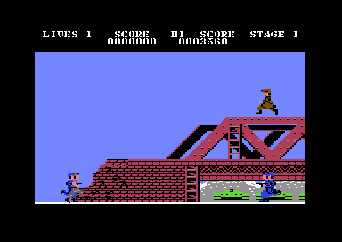

<meta charset="utf-8">
<meta name="viewport" content="width=device-width, initial-scale=1">
<title>Green Beret</title>
<link rel="preconnect" href="https://fonts.googleapis.com">
<link rel="stylesheet" href="https://fonts.googleapis.com/css2?family=Lato:wght@400;700;900&family=IBM+Plex+Mono:wght@400;500&display=swap">
<style>
:root{
  --bg:#23262d; --paper:#e9e7e1; --surface:#ffffff; --surface-2:#f1efea; --line:#d5d3cc; --line-soft:#e0ded8;
  --ink:#2f3136; --ink-soft:#55585f; --ink-mute:#80838a;
  --link:#1f5fa8; --link-hover:#154480; --accent:#1f5fa8;
  --amber:#c25a00; --cyan:#1f5fa8; --coral:#d04a3a; --green:#2a8a4a; --violet:#4a5bd6; --hl:#fff0c2;
  --chip:#2f3136; --chip-ink:#ffffff;
  --c64blue:#40318d; --c64grey:#686868;
  --fd:'Lato',system-ui,sans-serif; --fb:'Lato',system-ui,sans-serif; --fm:'IBM Plex Mono',ui-monospace,Menlo,monospace;
  --col:1080px; --gx:68px; --fs:17px; --lh:1.6; --hw:900; --h1:46px; --h2:26px; --sy:48px; --pp:26px; --r:10px;
  --plate-shadow:0 1px 2px rgba(0,0,0,.05),0 4px 14px rgba(0,0,0,.05);
}
*{box-sizing:border-box}
html{background:var(--bg);min-height:100%}
body{background:var(--paper);color:var(--ink);font-family:var(--fb);font-size:var(--fs);line-height:var(--lh);max-width:var(--col);margin:0 auto;min-height:100vh;padding:0 0 4rem}
h1,h2,h3{font-weight:var(--hw);letter-spacing:-.01em;text-wrap:balance;color:var(--ink);margin:0}
.wrap{padding:0 var(--gx)}
.hero{padding:48px var(--gx) 8px;text-align:left}
.eyebrow{font-family:var(--fm);font-size:12px;letter-spacing:.08em;text-transform:uppercase;color:var(--ink-mute);margin:0 0 10px}
.hero h1{font-size:var(--h1);line-height:1.15;letter-spacing:-.02em;margin:0 0 14px}
.hero .sub{margin:0 0 .6em;color:var(--ink-soft)}
section{padding:var(--sy) 0 24px}
section:last-of-type{border-bottom:none}
.fig{font-family:var(--fm);font-size:12px;letter-spacing:.08em;text-transform:uppercase;color:var(--ink-mute);margin:0 0 10px}
h2.t{font-size:var(--h2);margin-bottom:12px}
.lede{color:var(--ink-soft);margin:0 0 30px}
.plate{background:var(--surface);border:1px solid var(--line);border-radius:var(--r);padding:var(--pp);box-shadow:var(--plate-shadow)}
.cap{font-size:14px;color:var(--ink-mute);margin-top:14px;line-height:1.55}
.cap b{color:var(--ink);font-weight:700}
code{font-family:var(--fm);font-size:.82em;background:var(--chip);color:var(--chip-ink);border-radius:4px;padding:2px 6px;white-space:nowrap}
.gb-two{display:grid;grid-template-columns:1fr 1fr;gap:16px}
.gb-two img{width:100%;image-rendering:pixelated;border-radius:6px;display:block}
.gb-cv{width:100%;image-rendering:pixelated;display:block;background:#000;border-radius:6px}
.gb-bar{display:flex;flex-wrap:wrap;gap:8px;align-items:center;margin:0 0 12px;font-family:var(--fm);font-size:13px}
.gb-btn{font:inherit;font-family:var(--fm);font-size:13px;background:var(--surface-2);border:1px solid var(--line);border-radius:6px;padding:5px 10px;cursor:pointer;color:var(--ink)}
.gb-btn[aria-pressed="true"]{background:var(--ink);color:#fff;border-color:var(--ink)}
.gb-range{flex:1;min-width:160px}
.gb-out{font-family:var(--fm);font-size:13px;color:var(--ink-soft);margin-top:10px;min-height:1.5em}
.gb-tbl{border-collapse:collapse;width:100%;font-size:14px}
.gb-tbl th,.gb-tbl td{border-bottom:1px solid var(--line-soft);padding:6px 8px;text-align:left;vertical-align:top}
.gb-tbl th{font-family:var(--fm);font-size:12px;letter-spacing:.04em;text-transform:uppercase;color:var(--ink-mute);font-weight:500}
.gb-tbl td.n{font-family:var(--fm);text-align:right;white-space:nowrap}
.gb-scroll{overflow-x:auto}
.gb-fights{display:grid;grid-template-columns:1fr 1fr;gap:16px}
#gb-dogs{grid-column:1/-1}
.gb-gap{margin-top:12px}
.gb-fights canvas{width:100%;image-rendering:pixelated;background:#7f7ad1;border-radius:6px;display:block}
@media (max-width:720px){:root{--gx:16px;--h1:34px}.gb-two,.gb-fights{grid-template-columns:1fr}}
</style>
<!-- tabs -->
<header class="hero">
  <p class="eyebrow">1986 · Imagine Software (Ocean)</p>
  <h1>Green Beret</h1>
  <p class="sub">Every death in an end-of-stage fight, and every Bridge won, leaves two bytes behind on the processor's stack, and after 23 of them the game crashes. Holding 1 stops the hero in mid-air.</p>
</header>
<main class="wrap">

<section>
  <p class="fig">01 · The stack</p>
  <h2 class="t">Bug: die in the fights or win the Bridge 23 times and the game crashes</h2>
  <p class="lede">A death in an end-of-stage fight leaves two bytes on the stack, and so does winning the Bridge. Nothing ever takes them off, not even a new game.</p>
  <div class="plate">
    <div class="gb-bar"><span>Deaths in the fights and Bridges won</span><input type="range" class="gb-range" id="gb-leak" min="0" max="40" value="0" aria-label="Deaths in the end-of-stage fights and Bridges won"><span id="gb-leak-n">0</span></div>
    <canvas id="gb-page1" class="gb-cv"></canvas>
    <div class="gb-out" id="gb-leak-out"></div>
    <p class="cap">Page 1 of memory, <code>$0100</code>-<code>$01FF</code>, one cell a byte, from <code>$0100</code> at the top left. Red: <code>cia2_serial_check</code>. Blue: the tables of the 21 virtual sprites (X, X high bit, colour, shape). Orange: the bytes the deaths and the Bridges have left. Yellow: the stack the game uses below them, down to 17 bytes under the main loop's, as measured in the emulator, and purple where it runs into the sprites' tables. The verdicts are from the emulator, with the stack pointer moved where that many would leave it and the hero walking and stabbing on the Missile Base.</p>
  </div>
  <p>The routine that kills the hero, <code>player_killed</code>, throws away its caller's return address and jumps to <code>lose_life</code>, which restarts the stage. It expects to have been called from a routine the main loop called, so that the address it throws away is the main loop's own call. In play that is right. During an end-of-stage fight the contact tests are one call further down, and two bytes of return address stay on the stack. In the emulator the stack pointer at the top of the main loop went from <code>$FC</code> to <code>$FA</code> after a death in the Missile Base's fight, and stayed there.</p>
  <p>Winning the Bridge does the same without a death. Its fight, <code>bridge_fight</code>, calls <code>helis_launch</code> every frame, and when the last helicopter is down <code>helis_launch</code> jumps straight to <code>stage_complete</code> instead of returning, so that call's return address stays behind. The other three fights end the stage from the main loop's own level and leave nothing. In the emulator the stack pointer at the top of the main loop was two bytes lower after the Bridge was won than before. A player who never dies in a fight still loses two bytes each time round the four stages, so 23 times round leave the stack as 23 deaths in the fights do.</p>
  <p>Nothing in the game ever sets the stack pointer, so the bytes pile up for as long as the machine is on, through game over and every new game. The stack grows down through page 1, where the game also keeps its virtual sprites' tables, at <code>$0180</code>-<code>$01D3</code>. With 12 of these pairs of bytes left behind, the stack can reach the tables, and then the game's writes to the tables can land on return addresses. With 22 pairs left behind, the game played on for a minute; at 23 it crashed within half a minute, and at every count tried from 24 to 90 it crashed within 13 seconds.</p>
</section>

<section>
  <p class="fig">02 · Key 1</p>
  <h2 class="t">Secret: hold 1 and the hero stops in mid-air</h2>
  <p class="lede">While the 1 key is held, the hero stays where he is, even at the top of a jump, and the jump goes on when it is let go.</p>
  <div class="plate">
    <div class="gb-bar"><button class="gb-btn" id="gb-hold" aria-pressed="false">Hold 1</button><span>(or hold the 1 key)</span></div>
    <canvas id="gb-hang" class="gb-cv"></canvas>
    <div class="gb-out" id="gb-hang-out"></div>
    <p class="cap">The hero jumping as <code>player_jump</code> moves him along <code>jump_arc</code>. While 1 is held the frame does not move on, as <code>irq_player</code> skips him. In the emulator, held during a jump, his Y stayed at 194 for 50 frames, and the jump went on when the key was let go.</p>
  </div>
  <p>The hero is moved from the raster interrupt, by <code>irq_player</code>, which reads the 1 key on CIA 1 before it moves him. While the key is down it skips his movement, his animation and his stab, so he freezes, on the ground, on a ladder or in the air. The enemies and their shots go on. Nothing else in the game reads that key, and the game has no pause.</p>
  <p>A frozen hero can still die: the main loop's tests of what touches him (<code>enemy_contact</code>, <code>shot_contact</code>) go on.</p>
</section>

<section>
  <p class="fig">03 · Extra lives</p>
  <h2 class="t">Secret: the extra lives come at 30,000 and then every 70,000</h2>
  <p class="lede">The first comes at 30,000 points, and each one after it 70,000 later. A player with nine lives gets no tenth.</p>
  <div class="plate">
    <div class="gb-bar"><span>Score</span><input type="range" class="gb-range" id="gb-score" min="0" max="50000" value="0" aria-label="Score, in tens"><span id="gb-score-n">0</span></div>
    <div class="gb-out" id="gb-lives-out"></div>
    <p class="cap">From <code>new_game</code>, which sets the first at 30,000, and <code>next_life_check</code>, which adds 70,000 each time one is given. In the emulator, a score of 29,990 plus 10 gave a third life and moved the next to 100,000; with nine lives, 99,990 plus 10 left nine and moved the next to 170,000.</p>
  </div>
  <p>The game keeps the score of the next extra life, <code>next_life</code>, in three decimal bytes like the score. When the score reaches it, <code>next_life_check</code> moves it on by 70,000 and adds a life, unless there are nine already.</p>
</section>

<section>
  <p class="fig">04 · The jet</p>
  <h2 class="t">Secret: stop moving forward for 36 seconds and a jet comes</h2>
  <p class="lede">A jet flies over and drops a bomb that follows the hero. For a player who stands still, it comes after 1,792 frames.</p>
  <div class="plate">
    
    <p class="cap">The jet, from the emulator, after the hero had stood still since the start of the stage. It came at 1,800 frames, checked every 8.</p>
  </div>
  <p>A counter, <code>idle_time</code>, goes up by one every 256 frames and down by one each time the screen scrolls a character. When it reaches 7 the jet comes (<code>jet_update</code>): 7 times 256 frames is 36 seconds. Walking back and forth does not count, since only the scroll lowers the counter, and the scroll moves only forward.</p>
</section>

<section>
  <p class="fig">05 · The hi score</p>
  <h2 class="t">Secret: a new machine's hi score is 3,560</h2>
  <p class="lede">The hi score on the status line is 3,560 before anyone has played.</p>
  <div class="plate">
    
    <p class="cap">The first game after loading, in the emulator: HI SCORE 0003560.</p>
  </div>
  <p>The hi score is three decimal bytes at <code>hi_score</code>, and the file holds <code>$56 $03 $00</code> there, 356 with the 0 the status line adds. A new game leaves it alone, and only <code>hi_score_check</code> writes it, so 3,560 stands until a player beats it.</p>
</section>
</main>
<footer style="margin:16px 0 0;padding:22px var(--gx) 0;border-top:1px solid #e0ded8;font-family:'IBM Plex Mono',ui-monospace,Menlo,monospace;font-size:12px;color:#80838a"><a href="https://github.com/gamesexplained/gamesexplained" style="color:#1f5fa8;text-decoration:none">GitHub</a> · <a href="https://discord.gg/3V9GWyRDWV" style="color:#1f5fa8;text-decoration:none">Discord</a><br>© Games Explained contributors. Write-ups, facts and symbol maps are available under <a href="https://creativecommons.org/licenses/by-sa/4.0/" style="color:#1f5fa8;text-decoration:none">CC BY-SA 4.0</a>; code under <a href="https://opensource.org/licenses/MIT" style="color:#1f5fa8;text-decoration:none">MIT</a></footer>
<script src="../../lib/c64.js"></script>
<script>
// The Discoveries widgets, from the listing's memory (C64.load).
(function () {
const $ = (id) => document.getElementById(id);
const P = C64.PAL, hex = C64.hex;
const press = (b, on) => b.setAttribute('aria-pressed', on ? 'true' : 'false');

// ---- 01: page 1 with the stack as n deaths in the fights and Bridges won leave it. SP at
// main_loop is $FC with none (live) and 2 lower for each; the stack goes 17 bytes further (live,
// standing).
// Verdicts: the counts tried in the emulator.
const TRIED = { 0: 'played on', 8: 'played on', 12: 'played on', 16: 'played on', 18: 'played on', 20: 'played on',
  21: 'played on', 22: 'played on', 23: 'crashed', 24: 'crashed', 28: 'crashed', 32: 'crashed', 36: 'crashed', 40: 'crashed' };
function stack() {
  const cv = $('gb-page1'), d = $('gb-leak'), C = 32, S = 18;
  const ctx = C64.canvas(cv, C * S, 8 * S);
  const draw = () => {
    const n = +d.value, sp = 0xFC - 2 * n, low = sp - 17;
    $('gb-leak-n').textContent = String(n);
    for (let a = 0; a < 256; a++) {
      let c = '#d9d6cf';
      if (a <= 0x0B) c = '#d04a3a';
      else if (a >= 0x80 && a <= 0xD3) c = '#4a76c9';
      if (a > sp && a <= 0xFC && a > 0xFC - 2 * n) c = '#e08a2c';
      else if (a > 0xFC) c = '#e8c547';
      if (a >= low && a <= sp) c = a >= 0x80 && a <= 0xD3 ? '#7a3fa0' : '#e8c547';
      ctx.fillStyle = c; ctx.fillRect((a % C) * S + 1, Math.floor(a / C) * S + 1, S - 2, S - 2);
    }
    const t = TRIED[n];
    $('gb-leak-out').textContent = 'Stack pointer at the main loop ' + hex(sp, 2) + ', the stack down to ' + hex(0x100 + low)
      + (low <= 0xD3 ? ', inside the sprites’ tables' : '') + (t ? ' · in the emulator: ' + t : '');
  };
  d.oninput = draw; draw();
}

// ---- 02: a standing jump along jump_arc ($2C20), entry $14 down to 0 and back, one frame
// every 20 ms; held, the frame stays.
function hang(ram) {
  const cv = $('gb-hang'), btn = $('gb-hold'), S = 3, W = 240, H = 80;
  const ctx = C64.canvas(cv, W * S, H * S);
  const arc = ram.subarray(0x2C20, 0x2C40), K = { s25: P[ram[0x394C] & 15], s26: P[ram[0x394D] & 15] };
  let i = 0, held = false, still = 0;
  const hold = (on) => { held = on; press(btn, on); };
  btn.addEventListener('pointerdown', (e) => { e.preventDefault(); hold(true); });
  for (const ev of ['pointerup', 'pointerleave', 'pointercancel']) btn.addEventListener(ev, () => hold(false));
  addEventListener('keydown', (e) => { if (e.key === '1') hold(true); });
  addEventListener('keyup', (e) => { if (e.key === '1') hold(false); });
  const shape = (n, x, y) => C64.drawSpriteMC(ctx, ram.subarray(0x4000 + n * 64, 0x4000 + n * 64 + 63), x * S, y * S, S, P[0x0B], K.s25, K.s26);
  setInterval(() => {
    if (!held) { i = (i + 1) % 60; still = 0; } else still++;
    const k = i < 42 ? (i <= 20 ? 20 - i : i - 21) : 20, y = 70 - arc[0x14] + arc[k];
    ctx.fillStyle = '#7f7ad1'; ctx.fillRect(0, 0, W * S, H * S);
    ctx.fillStyle = '#ffffff'; ctx.fillRect(0, 71 * S, W * S, S);
    shape(0x21, 108, y - 41); shape(0x23, 108, y - 20);
    $('gb-hang-out').textContent = held ? 'Held: the hero has stayed ' + (70 - y) + ' lines up for ' + still + ' frames'
      : (i < 42 ? 'Jumping: ' + (70 - y) + ' lines up' : 'Standing');
  }, 20);
}

// ---- 03: extra lives at 30,000, then every 70,000.
function lives() {
  const d = $('gb-score');
  const draw = () => {
    const s = +d.value * 10, n = s >= 30000 ? 1 + Math.floor((s - 30000) / 70000) : 0;
    $('gb-score-n').textContent = s.toLocaleString('en-GB');
    $('gb-lives-out').textContent = n + ' extra ' + (n === 1 ? 'life' : 'lives') + ' so far; the next at '
      + (30000 + 70000 * n).toLocaleString('en-GB');
  };
  d.oninput = draw; draw();
}

stack(); lives();
C64.load('listing.json').then((L) => hang(L.ram));
})();
</script>
